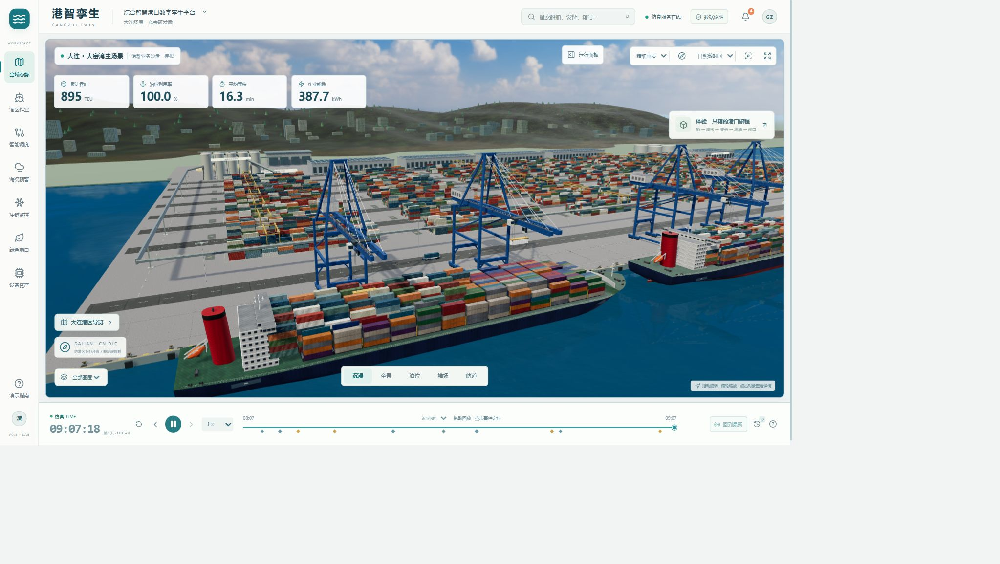

船岸作业一图掌握
查看三维船舶、设备与泊位，连接对象状态、任务信息和运行时间。
面向大连综合港口场景的大学生竞赛原型。通过三维港区、船岸作业、海况推演和调度实验，探索更直观的港口运行与决策方式。
从船舶、泊位和岸桥，到集装箱、运输车辆与海产品冷链，系统以统一的对象和仿真时间组织业务。下图为本地原型的实际运行画面。

本地原型截图 · 三维场景与业务数据为模拟演示
查看三维船舶、设备与泊位，连接对象状态、任务信息和运行时间。
模拟海雾、大风、道路阻断与设备故障，观察资源约束和业务变化。
相同任务和随机种子下运行方案，记录等待、完工时间、距离与能耗。
结合模拟温度、批次与超温记录，探索海产品港口冷链追溯。
以集装箱作业为主线，逐步扩展散货、液货与能源设施的业务表达。
保留模型假设、输入和运行记录，为竞赛演示与教学研究提供基础。
这是项目介绍的静态网页。港区布局、船舶、海况和指标均为模拟内容，并非大连港实时数据。完整三维交互、仿真与调度需要按照运行指南在本地启动前端和 FastAPI 后端。